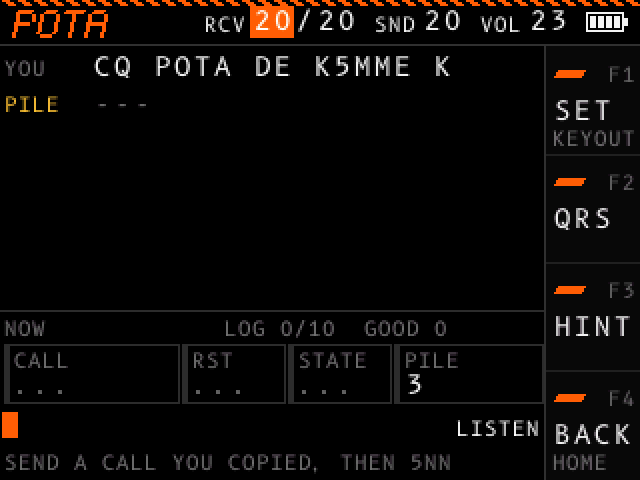

Activate a park or summit¶
On this screen you are the activator on a park (POTA) or a summit (SOTA). You call CQ, a pileup of hunters answers, and you work the hunters one at a time. The device reads each over you send and answers the way hunters do on the air.
Open ON AIR in the menu, then POTA or SOTA. The header shows the program and the RCV, SND and VOL values.
| Program | QSOs for a valid activation | You sign with |
|---|---|---|
| POTA | 10 | 72 |
| SOTA | 4 | 73 |
Set your callsign first in the CALLSIGN section of the settings. The hunters listen for it.
Work a QSO¶
Your over ends one word gap after a last word of K, BK or KN, or when you stop keying for three word gaps. The footer tells you what to send next.
- Call CQ:
CQ POTA DE <your call> K. With an empty pileup, one to three hunters call you. Each hunter sends its callsign once or twice. - Send the callsign of one hunter, then a report:
K1ABC 5NN. That hunter sends your report and its state, such asRR TU 559 CA CA 72. A hunter in Canada sends its province, such asON. A hunter outside the US and Canada sends no state. - Close the QSO: send TU, the hunter's state, and 72 or 73:
TU CA 72 E E. To a hunter with no state, sendTU 72 E E. The QSO goes in your log, and most hunters sendE Eor73 E Eback. Then the pileup calls again, and new hunters can join it.
The device counts a QSO as copied when your closing over holds the hunter's state. A QSO with a hunter that sends no state always counts as copied.
More ways to talk to the hunters:
| You send | The hunters do this |
|---|---|
Part of a callsign, such as K1A?, or a callsign with one character wrong |
The hunter whose callsign matches best sends its callsign twice. |
A callsign after your closing, such as TU CA 72 K2XYZ 5NN |
You close one QSO and start the next. |
CQ, QRZ or QRZ? |
The pileup calls again. |
CQ without your callsign |
A hunter asks CALL?. |
QRS |
The last transmission again, 4 WPM slower. Each QRS slows the hunters by 4 WPM more, down to 8 WPM, until the QSO ends. |
AGN, AGN? or ? |
The last transmission again. |
| Anything else | The hunter you work sends ?. With no hunter in a QSO, the pileup calls. |
What the screen shows¶

The transcript shows each over: YOU for yours, PILE for the pileup, and the hunter's callsign for the hunter you work. What the hunters send shows as a row of dashes until the QSO is in your log, so you copy it by ear. F3 (HINT) shows the text, and then reads HIDE.
Under the transcript:
| Item | What it shows |
|---|---|
| NOW or LAST | NOW during a QSO and before your first. LAST after a QSO: the items show the QSO you logged last. |
| LOG | QSOs in your log and the goal, such as LOG 3/10. The count turns green at the goal. |
| GOOD | QSOs where you sent the hunter's state back. |
| CALL | The callsign of the hunter. A green edge marks a QSO in progress. |
| RST | The report the hunter gave you. During a QSO, only HINT shows it. |
| STATE | The hunter's state or province, or DX for a hunter outside the US and Canada. During a QSO, only HINT shows it. After the QSO, the label is COPIED with a green edge, or MISSED with a red edge: whether you sent the state back. |
| PILE | How many hunters are in the pileup. |
... marks an item with no value yet.
Under the items, your over shows as you key it. At the right of your over, the state shows LISTEN while the hunters send, YOUR TURN while they wait for you, and KEYING while you key. The footer shows the next step. With HINT on, the footer shows the exact text to send.
Band noise and fading play on this screen when you set them in the SOUND section of the settings.
Pileup settings¶
The QSO section of the settings sets how the hunters behave. Their base speed is CHAR SPEED, with FARNSWORTH for longer gaps, in the RECEIVE section; MATCH uses your keyer speed.
| Setting | Values |
|---|---|
| PILEUP | OFF: one hunter at a time. TAKE TURNS: up to four hunters, who call one after another. OVERLAP: up to four hunters, who call at the same time. |
| FIST | HUMAN: each hunter keys with small timing errors. CLEAN: exact timing. |
| SPEED SPREAD | ON: each hunter sends up to 5 WPM faster or slower than the base speed. |
Hunters send between 8 and 40 WPM. Each hunter sends at its own pitch, up to 200 Hz above or below your tone.
Controls¶
| Control | Action |
|---|---|
| F1 (SET) | Stops the hunters and opens the settings at the QSO section. F4 (BACK) there returns, and the hunters send their last transmission again at the new settings. |
| F2 (QRS) | The same as sending QRS. |
| F3 (HINT or HIDE) | Shows or hides the hidden text and the exact next step. |
| F4 (BACK) | Pauses the activation and opens the ON AIR list of the menu. Click POTA or SOTA, or RESUME, to go on: the hunters send their last transmission again. The log stays while the device is on, until you start other practice. |
| Dial turn | Changes the focused header value. See Header values. |
| Dial click | Moves the focus to the next header value. |
| Dial hold | Turns the device off. |
| Key | Keys your over. |
Each QSO in your log also counts in Progress.